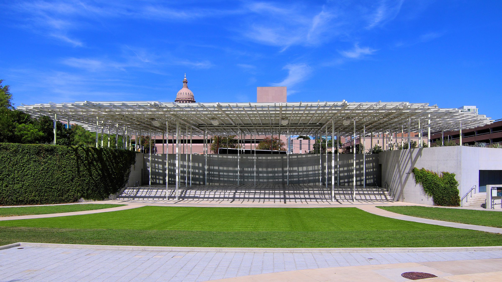

Most of what you buy, nobody made. Not anyone you could name, anyway. It came off a line, out of a warehouse, onto a porch.
For two days this month, that changes on Red River.
On Saturday and Sunday, November 21 and 22, The Front Market returns to Moody Amphitheater in Waterloo Park for its Fall 2026 season. More than 175 independent artists, makers, craftspeople and small business owners from across Texas will set up between 11 a.m. and 5 p.m., rain or shine. Organizers call it one of the largest and longest-running craft markets in Austin. This is its 20th season.
It's free. It's open-air. Dogs are welcome. The organizers put it plainly: "100% family-friendly. Dog-friendly. Human-friendly."
A loud stage goes quiet
Moody Amphitheater was built for noise. Its builders sized it for 5,000 people and gave it a canopy roof that reaches out over the sidewalk toward Trinity Street. The City's events calendar lists Knocked Loose and Denzel Curry there on Thursday, Nov. 5, and Steve Lacy on Saturday, Nov. 7.
Two weeks later, the same ground holds kiln-fired cups and hand-dyed indigo.
The park around it does some of the work. Waterloo Park is 11 acres between 12th and 15th Streets along Red River, planned around hill country gardens, wetland spaces, open lawns and trails. Future Front describes the venue as part of Waterloo Greenway, a 1.5-mile park system linked by Waller Creek. The Capitol is a few blocks over. Office towers line the edges. You walk in from the street and arrive among gardens, not storefronts.
A craft market belongs in a park more than a parking lot. This one has the better address.
Who's behind it
The market is curated by Future Front, a 501(c)(3) arts nonprofit homegrown in Austin. It describes itself as a cultural space and public exhibition series "with women and LGBTQ+ creatives at the front," and it has been at it since 2016. Home base is a creative space in East Austin. Twice a year it takes the market somewhere bigger. By its own count, the two seasons together welcome more than 400 vendors and more than 10,000 guests.
There's no headliner. There doesn't need to be.
Read the names
The Sunday-only list reads like somebody's favorite zine shelf. Cowboy Finalgirl. Bitchin' Stitchin'. The Bead Bitch. Sappy Go Lucky. Typewriter Tarot. Silly Goose Ceramics. Strawberry Milkweed Prints. Neon Swan Studio. Paw Shots ATX, a pet-portrait booth, shares the page with BookWoman, a feminist bookstore.
Each name is its own small business. In most cases, the person who made the thing is the person taking your card.
The lineup leans hard toward the handmade. On the Day Two page there's clay from Amano Pottery Studio, Howdy Ceramics, Tranquil Ceramics, Clay Valley Studio, Martfoot Made Clay Goods and Hanle's Clay Flowers. Candles from Clay House Candles, Great Divide Candle Co., 7th Street Candle Co. and Kandlery. Fiber and dye from Jes Holloway Fiber Arts, Sasa Indigo and Cochineal Studio. Vintage racks from Morgan Mars Vintage, Vida Antigua Vintage and Spoiled Vintage. The literary publisher Host Publications. Inner Grandma. Queso Quest. Moon & Cats.
That's the real offer here. Not a deal. A short line between the thing and the hands that shaped it.
Between the tables
Future Front lists what it calls "Community Surprises":
- live DJ sets with the Red River Cultural District
- clay wheel-throwing demos by the Broad Studios Club House Ceramics Fellowship
- flash tattoos with Slowpoke Tattoo
- Buenas Lotería at the picnic tables (listed for Sunday)
- daily giveaways
- a Best Booth Design Contest among the vendors
DJ sets, workshops and live art installations rotate from day to day.
The event page calls the food court "immaculate." The listed menus:
- a Coffee & Glizzies Café by Coquito Austin
- a Ceviche Bar by Mariscos Frontera
- a Matcha Bar by mori matcha
- a Puli-Ra pop-up by chef Deepa Shridhar (Saturday only)
- baked goods from Lyssie Lou's Cookie Co. (Saturday), plus Brown Sugar Bake Shop and Sour Jo's
Bring a water bottle. There will be fountains on site with free still and sparkling water.
Getting there
The organizers ask visitors to carpool, bike or take the bus if they can, out of respect for neighbors and vendors. It pays, a little: thanks to Movability's GoGrant, people who carpool, bus or bike can pick up a gift at the market's Info Desk.
Bike parking is at 15th and Red River, and along Trinity between 12th and 15th. Driving means limited parking at $20 to $25 in the nearby state garages; the organizers point to the Capitol Visitors Parking garage at 1201 San Jacinto Blvd. and to State Garages A and F. For transit, use CapMetro's trip planner.
ASL interpreters are available on request. Spanish translation can be arranged by emailing hello@futurefronttexas.org.
The short version
The Front Market, Fall 2026. Saturday, Nov. 21 and Sunday, Nov. 22, 11 a.m. to 5 p.m. Moody Amphitheater at Waterloo Park, 1401 Trinity St., Downtown Austin, 78701. Free, open-air, dog-friendly, rain or shine. The full daily lineup is at thefrontmarket.com.
Go for a gift. Leave knowing who made it.